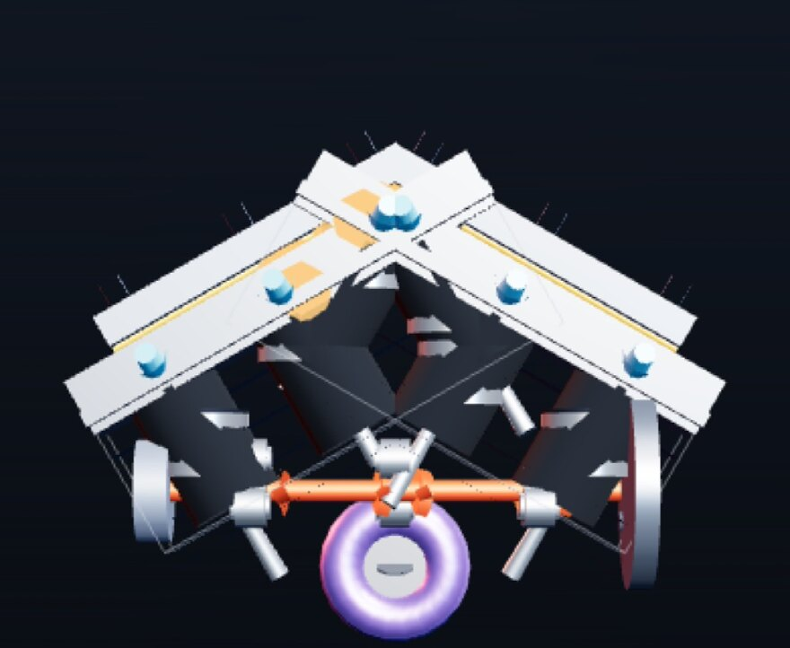

气缸越多，
就真的越快吗？
从一台 88 匹的五缸柴油到 1600 匹的 W16 四涡轮，从 8000 转的直六到 19000 转的 F1 V10——这里把 5、6、8、10、12、16 缸里那些「值得一提」的高性能机型摆在一起，讲清楚它们为什么长成那个样子，以及「缸数」到底换来了什么。
27个代表机型
6种缸数族（5–16）
19000rpm · F1 V10 红线
1600N·m 峰值扭矩上限
01 / ENGINE ATLAS
型号图谱
点击任意卡片查看详细参数与设计解读。数据以工厂公布的曲轴输出为主；F1 历史机型为文献记载值，已经用「约」标注。
02 / LIVE 3D
3D 解剖台
21 台机型可实时旋转、剖切、拆解、调转速的 3D 模型。全部几何用代码现场生成，没有任何贴图或外部模型文件。

▶ 进入 3D 解剖台
03 / ANATOMY
缸型解剖：为什么是「这个形状」
下面每一张都是本站用 SVG 画的示意（不是照片、不是厂商图纸）：每个圆代表一个气缸，看的是排布方式，不看真实比例。
04 / NUMBERS
数据对比：缸数换来了什么
同一张坐标轴上比较升功率（PS/L）与红线转速。注意那些「异常点」——它们往往才是工程上真正有意思的地方。
05 / SPEC SHEET
总表（点表头排序）
单位：功率 PS，扭矩 N·m，排量 cc，重量 kg。— 表示厂方未公开或不同版本差异过大。
↔ 表格可左右滑动
| 型号 | 缸数 | 结构 | 排量 | 功率 | 扭矩 | 红线 | 升功率 | 重量 | 进气 | 年份 |
|---|
06 / WHY IT WORKS
原理冷知识
这些结论决定了工程师只能在有限的几种「缸数」里做选择，也解释了为什么奇数缸这么少见、为什么 V12 那么顺。
07 / TIMELINE
一百年的缸数简史
多缸机不是越来越快这么简单，它是「规则、材料、成本」三股力量的博弈结果。下面按年代挑了几个转折点。
08 / RIGHTS
版权与数据来源说明
这个站点是「自己画的 + 自己写的参数表」，没有搬用任何厂商图片、宣传文案或受版权保护的图纸。